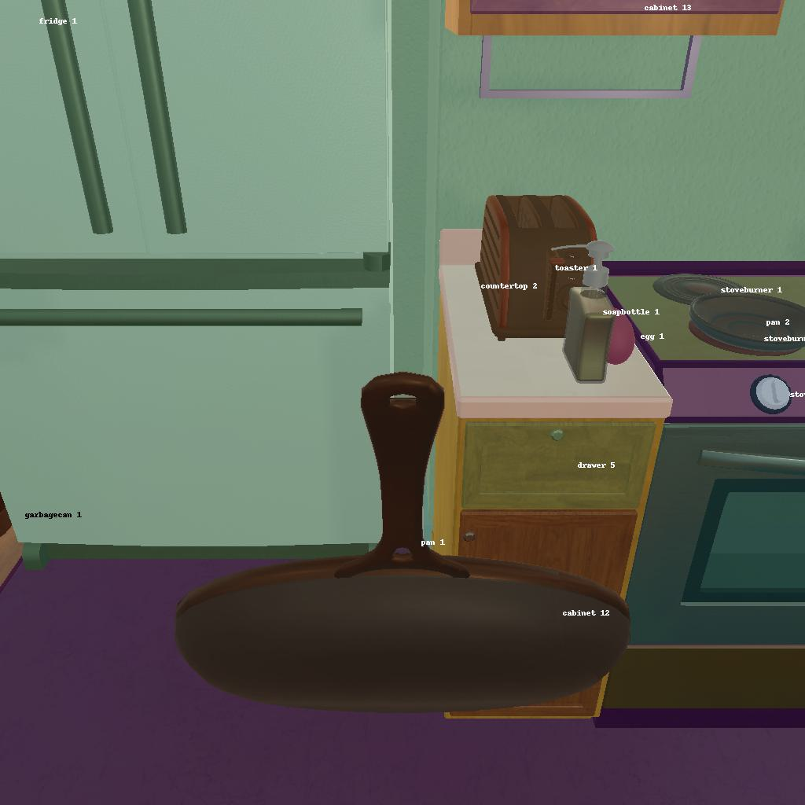

---------------------------------------------------------task: 17---------------------------------------------------------
--------------------------------------------------------------------------------------------------------------------------------------------------------------------
--------------------------------------------------------------------------------------------------------------------------------------------------------------------
Step:--------------------------------------------------------------------------19-------------------------------------------------------------------------------
----------------------------------------
VLM Prompt:
Image1:
**Instruction**
1. Analyze the provided image to identify all visible household objects, focusing on those relevant to the task description "cool some pan and put it in stoveburner."
2. Use the analysis of the image and the task hint "The agent must find an object of the desired type, pick it up, go to a fridge, cool the object with the fridge, then find the correct location to place it, and put it down there. The agent does not need to use the fridge button or open the fridge to cool the object, and the agent just needs to do action that is "cool the object with the fridge"." to answer the question: what is the most reasonable action in the choices for the task description "cool some pan and put it in stoveburner"?
4. Decide and write the answer using the template: The answer is: (i): , where i is the real number. If there is no desired object in the image, search every place based on **Initial Observation** to find the object. And if no one is exactly correct, choose a similar answer.
**Initial Observation**
You are in the middle of a room. Looking quickly around you, you can see cabinet (1-14), countertop (1-2), microwave (1), drawer (1-5), sink (1), sinkbasin (1), coffeemachine (1), stoveburner (1-4), toaster (1), fridge (1), diningtable (1), garbagecan (1), safe (1)
**Answer Choices**
(1): go to cabinet 1
(2): go to cabinet 2
(3): go to cabinet 3
(4): go to countertop 1
(5): go to cabinet 4
(6): go to cabinet 5
(7): go to microwave 1
(8): go to cabinet 6
(9): go to drawer 1
(10): go to drawer 2
(11): go to drawer 3
(12): go to cabinet 7
(13): go to cabinet 8
(14): go to sink 1
(15): go to sinkbasin 1
(16): go to coffeemachine 1
(17): go to cabinet 9
(18): go to cabinet 10
(19): go to drawer 4
(20): go to cabinet 11
(21): go to stoveburner 2
(22): go to stoveburner 3
(23): go to stoveburner 4
(24): go to cabinet 12
(25): go to toaster 1
(26): go to drawer 5
(27): go to countertop 2
(28): go to fridge 1
(29): go to cabinet 13
(30): go to cabinet 14
(31): go to diningtable 1
(32): go to garbagecan 1
(33): go to safe 1
(34): examine pan 1
(35): examine stoveburner 1
**Answer**
Let's think step by step by following the instructions.
----------------------------------------
----------------------------------------
Original Response:
The task is to cool some pan and put it in stoveburner. According to the task hint, the agent needs to find a pan, cool it with the fridge, and then place it on a stoveburner.
From the image, we can see that there is a pan (pan 1) on the countertop 2 next to the toaster. This pan is likely the object needed for the task. The fridge (fridge 1) is also visible in the image. Therefore, the agent needs to cool pan 1 with fridge 1 and then place it on a stoveburner.
Since the task involves cooling the pan and then placing it on a stoveburner, the most reasonable actions from the answer choices would be to first examine the pan to pick it up and then go to the fridge to cool it. After cooling the pan, the agent should then go to a stoveburner to place the pan.
Looking at the answer choices, the action that aligns with this process is:
(34): examine pan 1 - to pick up the pan.
(28): go to fridge 1 - to cool the pan.
(21), (22), or (23): go to stoveburner 2, 3, or 4 - to place the pan.
However, since we can only choose one action, the first logical step would be to pick up the pan. Therefore, the most reasonable action to start with would be:
The answer is: (34): examine pan 1.
----------------------------------------
----------------------------------------
>>> Refine Original VLM Response and Get Pure Action: examine pan 1
----------------------------------------
-----------------------------------------------------------------
Running time: 16.30636215209961 seconds
Total Money: 6.072610000000002
-----------------------------------------------------------------
-----------------------------------------------------------------
Text Observation:This is a normal pan 1
-----------------------------------------------------------------
UNSUCCEED